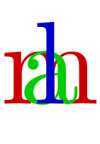
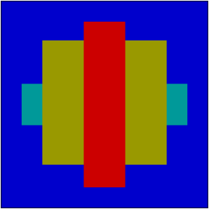
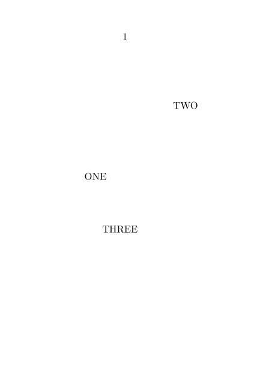
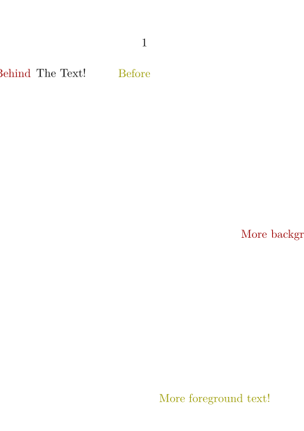
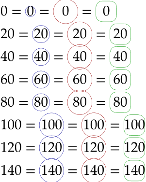

Contents
Overlays are predefined snippets that you can stack on each other. In contrast to Layers, which regard whole pages, overlays mostly are only single pictures, words or the like.
Defining
\defineoverlay[reference name][commands]
Better put your commands in braces.
Using
You can use defined overlays anywhere there is a background option.
-
\setupcolors[state=start] \setupbodyfont[14pt] \defineoverlay [tea] [{\color[darkgreen] {\ss\bf GREEN TEA}}] \framed [width=8em, background=tea, align={middle,hilo}, style=italicface] {today \blank[small] for sale}
You can use this also with pictures. See also logos.
Another use for overlays is for adding a graphic to every page to indicate chapters (sometimes known as a thumb index).
Overlays vs. Layers
Overlays and Layers are different mechanisms, which are powerful when combined.
Overlays
ConTeXt has an overlay environment that can be used in the text to stack the arguments on the same spot. In the example below, each new element is placed on top of the previous element.
-
\setupcolors[state=start] \setupbodyfont[80pt] \startoverlay {\strut\middlered m} {\strut\middlegreen a} {\strut\middleblue l} \stopoverlay
- 
Without the \strut argument each argument is horizontally and vertically centered:
-
\setupcolors[state=start] \setupbodyfont[80pt] \startoverlay {\middlered m} {\middlegreen a} {\middleblue l} \stopoverlay
Overlays are created with the \defineoverlay command, which takes an overlay name and content. The overlays are then applied to a \framed command or the background to the page the textblock, header, and so forth.
The next example shows two overlays (“behind” and “before”), which are activated in the frame with a background key.
-
\defineoverlay [OLbehind] [{\blackrule [height=1cm, width=4cm, color=middlecyan]}] \defineoverlay [OLbefore] [{\blackrule [height=4cm, width=1cm, color=middlered]}] \framed [width=5cm, height=5cm, background={color, OLbehind, foreground,OLbefore}, backgroundcolor=middleblue] {\blackrule [width=3cm,height=3cm, color=middleyellow]}
- 
The arguments of the background key used two names in addition to the “behind” and “before” overlays. The first name is “color”, which is needed when using the backgroundcolor key to put a color in the entire frame's area. The second is “foreground”, which can place overlays *before* the content of the frame because “foreground” is the frame text itself.
The overlay environment and overlay mechanism for \framed are similar.
The methods to set them because in the first case you set the content for each level which the argument in braces ({…}{…}) and in the second case you define them first with \defineoverlay and set the order in the background key.
Layers
With layers the content from each command can be positioned at a certain horizontal and vertical position. The following example creates a new layer and set three texts. The texts are placed in the page using the \flushlayer command.
-
\setuppapersize[A7] \starttext \definelayer[test] \setlayer[test][x=1.5cm,y=3cm]{ONE} \setlayer[test][x=4cm,y=1.0cm]{TWO} \setlayer[test][x=2cm,y=4.5cm]{THREE} \flushlayer[test] \stoptext
- 
When you put new some text after \flushlayer would be surprised because it would end put on the following page but you shouldn’t wonder about this because layers have nothing to do with the page background or foreground.
What makes the layer and overlay mechanism is interesting is when you combine them and put the \flushlayer command in a overlay which does now place the texts before or after the content of a frame. With my next example we’re finally in the process to combine them.
-
\setuppapersize[A7] \starttext \definelayer [behindtext] \definelayer [beforetext] \setupbackgrounds [text] [background={behindtext, foreground,beforetext}] \setlayer [behindtext] [x=-1cm,y=.75ex] {\color[darkred]{Behind}} \setlayer [beforetext] [x=+2cm,y=.75ex] {\color[middleyellow]{Before}} The Text! \setlayer [behindtext] [x=5cm,y=4cm] {\color[darkred]{More background text!}} \setlayer [beforetext] [x=3cm,y=8cm] {\color[middleyellow]{More foreground text!}} \stoptext
- 
When you look at the example you can see that haven't created a overlay for layer even though I said you need it to put the layer after the text. This isn’t necessary because when you create a new layer context does also create a overlay with the same name in which the layer is placed. The other question is how you can place overlays on the text/page when I told before overalls can only be placed on frame, this is possible because all page elements (textblock, header, footer and even the page and paper itself) are frames. Even though these elements are frames they don’t provide all the options from \framed because they are a special version with less functionality.
Example of circled numbers
-
% Solution A - a framed that uses an overlay as background ========== \startuseMPgraphic{MPtextcircle} path p; p := fullcircle xscaled OverlayWidth yscaled OverlayWidth; setbounds currentpicture to p ; % p:= p shifted (0,StrutDepth/2.7); draw p withpen pencircle scaled 0.25pt withcolor OverlayLineColor; \stopuseMPgraphic \defineoverlay[OLtextcircle][\useMPgraphic{MPtextcircle}] \defineframed [textcircledA] [ frame=off, strut=yes, rulethickness=0.0pt, background=OLtextcircle, framecolor=darkblue, location=top,] % Solution B - same with fixed dimensions =========================== \defineframed [textcircledB] [textcircledA] [width=1.75em, framecolor=darkred,] % Solution C - a framed with radius ================================= \defineframed [textcircledC] [width=1.5em, frame=on, strut=yes, rulethickness=0.25pt, framecolor=darkgreen, offset=1pt, location=top, corner=round, radius=.5em,] % =================================================================== \setupbodyfont[pagella, 14pt] \dostepwiserecurse{0}{150}{20}{% #1 = \textcircledA{#1} = \textcircledB{#1} = \textcircledC{#1}\\}
- 